Como preparar e dirixir o Estudo de A Atalaia a tempo
Versión 4.0 · novembro de 2026
⚠ Dúas advertencias importantes
Dirixe sempre coa publicación orixinal. Aínda que a aplicación mostra os parágrafos e as preguntas, só o fai para calcular os tempos. O que dirixe nunca debe guiarse polo contido que aparece no temporizador: para presentar a información ao auditorio usa sempre a aplicación JW Library ou a revista A Atalaia impresa.
Durante o estudo, usa o modo presentación. É a forma recomendada de usar o temporizador mentres dirixes, porque evita distraccións: mostra só o necesario, coas cores verde, amarelo e vermello para saber dunha ollada como vas de tempo, e con botóns grandes e fáciles de premer para pasar ao seguinte parágrafo e para marcar os comentarios (apartado 9).
O Temporizador de Estudo axuda ao irmán que dirixe o Estudo de A Atalaia a repartir ben o tempo e rematar á hora.
Cargas o artigo da semana en PDF e a aplicación:
Le o artigo e atopa os parágrafos, as preguntas, os textos que hai que ler, as imaxes, as notas e as preguntas de repaso.
Calcula canto tempo dedicar a cada parte: introdución, cada parágrafo, o repaso e a conclusión.
Guíate durante o estudo cun cronómetro por parágrafo e cores que indican se vas a tempo, en prórroga ou pasado de tempo.
Reaxústase soa: se un parágrafo se alonga, reparte o tempo que queda entre os seguintes para que remates á hora.
Aplicación non oficial. É un proxecto gratuíto e independente. Non é unha publicación oficial nin ten relación con jw.org nin coa organización das Testemuñas de Xehová. O artigo analízase no teu propio dispositivo: non se envía nin se garda en ningún servidor.
As imaxes deste manual usan un artigo de exemplo inventado, non un artigo real de A Atalaia.
2Instalar a aplicación
A icona da aplicación é un libro laranxa cun indicador de cores (verde, amarelo e vermello) sobre fondo negro.
A icona
Móbil ou tableta Android
Abre Google Play.
Busca “Temporizador Estudio Atalaya”, ou abre esta ligazón: abrir en Google Play.
Preme Instalar.
Se xa usas a aplicación desde o navegador nun Android, verás na pantalla de inicio a tarxeta verde “Usas Android?” co botón “Abrir en Google Play”.
iPhone e iPad
Aínda non está na App Store, pero funciona igual desde a web:
Toca o botón Compartir (o cadrado cunha frecha cara arriba).
Escolle “Engadir á pantalla de inicio” e preme Engadir. Aparecerá a icona na túa pantalla.
Ordenador
Abre temporizador-estudio.vercel.app en Chrome ou Edge. Se queres, instálaa como programa coa icona de instalar da barra de enderezos.
Actualizacións: cando hai unha versión nova aparece o aviso “Hai unha nova versión da app dispoñible”. Preme Actualizar. Nunca se actualiza soa no medio dun estudo.
3A pantalla de inicio
É o primeiro que ves ao abrir a aplicación. Os números vermellos da imaxe indícanche onde está cada cousa.
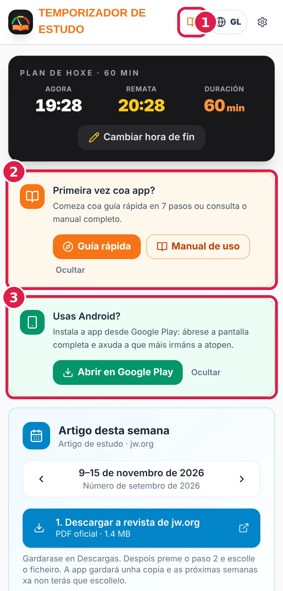
Pantalla de inicio.
Botón do libro: abre este manual en calquera momento.
“Primeira vez coa app?”: abre a guía rápida ou o manual. Cando xa coñezas a app, preme Ocultar.
“Usas Android?” (só en móbiles Android que usan o navegador): instala a app desde Google Play. Tamén se pode ocultar.
Máis abaixo atoparás:
Plan de hoxe: a hora actual, a hora á que remata o estudo e a súa duración.
Artigo desta semana: para descargar a revista e abrila (apartado 4).
Visita do superintendente de circuíto: o interruptor para o estudo de 30 minutos (apartado 13).
Axustes do estudo: un resumo da túa configuración, coa ligazón Cambiar.
Ao final, as ligazóns á privacidade, ao manual, a Google Play e ao historial de estudos.
Arriba están tamén o idioma (GL) e os axustes⚙.
4Cargar o artigo da semana
A tarxeta “Artigo desta semana” mostra a semana actual (por exemplo, 9–15 de novembro de 2026) e o número de A Atalaia que a contén. Coas frechas ‹› podes escoller outra semana.
“1. Descargar a revista de jw.org” abre o PDF oficial do número que corresponde. En Android gárdase en Descargas; en iPhone, preme Compartir → “Gardar en Ficheiros”.
“2. Escoller o PDF descargado”: selecciona ese ficheiro. A aplicación busca dentro da revista o artigo da semana escollida e analízao. Despois de premer o paso 1, ao volver á app este botón ponse verde (“Xa se descargou? Toca aquí para abrilo”): abonda un toque.
A Atalaia descárgase no idioma da aplicación. Se a aplicación está en galego, descárgase a edición en galego; se está en castelán, a edición en castelán, e así con todos os idiomas. Para descargar outro idioma, cambia primeiro o idioma da aplicación (apartado 14). En portugués, descárgase a edición de Portugal ou a do Brasil, segundo o que escollases.
A aplicación garda unha copia da revista. As semanas seguintes do mesmo número ábrense directamente con “Abrir o artigo desta semana”, sen volver descargar nada. As revistas gardadas bórranse soas 3 meses despois da súa última semana.
No ordenador tamén podes arrastrar o PDF a calquera parte da pantalla de inicio (aparece o aviso “Solta aquí o PDF”) ou escoller o cartafol onde gardas as revistas, e a aplicación atoparaas soa.
Di que a revista aínda non está publicada? jw.org publica cada número unhas semanas antes. Se escolles unha semana moi afastada, pode que aínda non estea dispoñible.
5O resumo e o plan do estudo
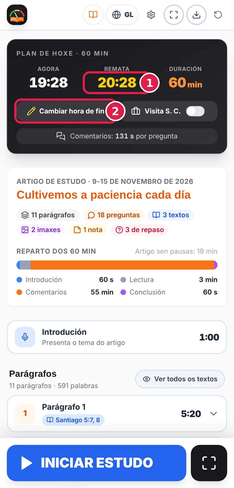
O plan de hoxe.
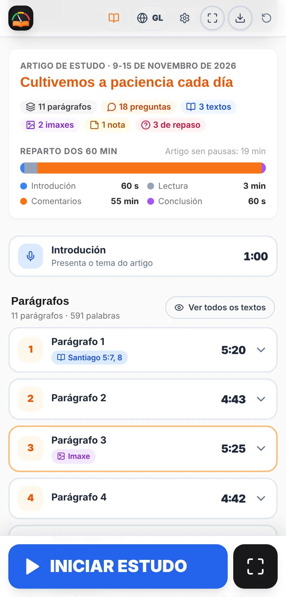
O resumo do artigo.
Hora de fin: a hora á que remata o estudo.
«Cambiar hora de fin»: úsao cando o discurso público remata tarde (mira o recadro de abaixo).
Cando cambiar a hora de fin? A reunión dura 1 hora e 45 minutos: canción e oración (5 min), discurso público (30 min), canción (5 min), estudo de A Atalaia (60 min) e canción e oración final (5 min).
Se o discurso remata tarde, eses minutos quítanselle a A Atalaia. Antes de comezar o estudo, toca «Cambiar hora de fin» e escribe a hora á que debe rematar o estudo para que a reunión acabe á súa hora (5 minutos antes do final, para a canción e a oración). Todo se recalcula para rematar a esa hora.
Se o discurso remata a tempo ou antes, non cambies nada: o estudo dura os seus 60 minutos e a reunión pode rematar un pouco antes, pero nunca despois. Por iso a aplicación nunca alonga o estudo máis do configurado.
Debaixo, o resumo do artigo mostra:
O título e a semana.
Cantos parágrafos, preguntas, textos, imaxes e notas ten.
Unha barra de cores co reparto do tempo: IntroduciónLecturaComentariosConclusión.
No plan verás tamén “Comentarios: X s por pregunta”: o tempo medio para responder cada pregunta.
Se o artigo non cabe no tempo escollido, aparece o aviso “Non cabe”. Podes alongar a duración ou escoller unha lectura máis rápida en Axustes.
6A lista de parágrafos
Cada parágrafo aparece nunha liña co seu número e o seu tempo previsto. Toca un parágrafo para abrilo.
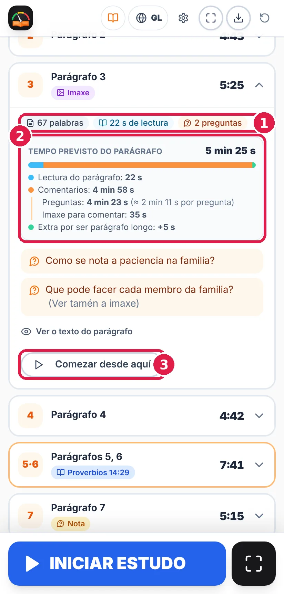
Un parágrafo aberto.
Datos do parágrafo, cada un coa súa cor: palabras (gris), tempo de lectura (azul) e preguntas (laranxa). Durante o estudo aparece tamén a hora prevista (morado).
Tempo previsto do parágrafo: o total e como se reparte. A barra mostra a lectura do parágrafo (azul), os comentarios (laranxa) e, nos parágrafos longos, un extra para máis comentarios (verde). Se hai un texto para ler, unha imaxe ou unha nota, coméntaos o auditorio: aparecen dentro dos comentarios, debaixo das preguntas (por exemplo «Texto para ler: 35 s»). As partes suman o total.
“Comezar desde aquí”: se o estudo xa vai empezado (por exemplo, chegas tarde), salta a este parágrafo.
As etiquetas de cores avisan do que hai que ter en conta:
Etiqueta
Que significa
Santiago 5:7, 8
Hai un texto bíblico para ler.
Imaxe
A pregunta fala dunha imaxe do artigo.
Nota
Hai unha nota que comentar.
★ Idea importante
A pregunta menciona un recadro ou unha idea entre comiñas.
Con “Ver o texto do parágrafo” podes ler o texto para preparar os tempos. Para dirixir, usa sempre a publicación orixinal.
Os parágrafos que comparten pregunta (por exemplo, “5, 6”) van xuntos, e o botón Seguinte salta o grupo enteiro.
7Dirixir o estudo paso a paso
Recomendado: durante o estudo usa o modo presentación (apartado 9). Aquí explícase como funciona; é igual nas dúas vistas.
No móbil, os botóns principais están sempre abaixo:
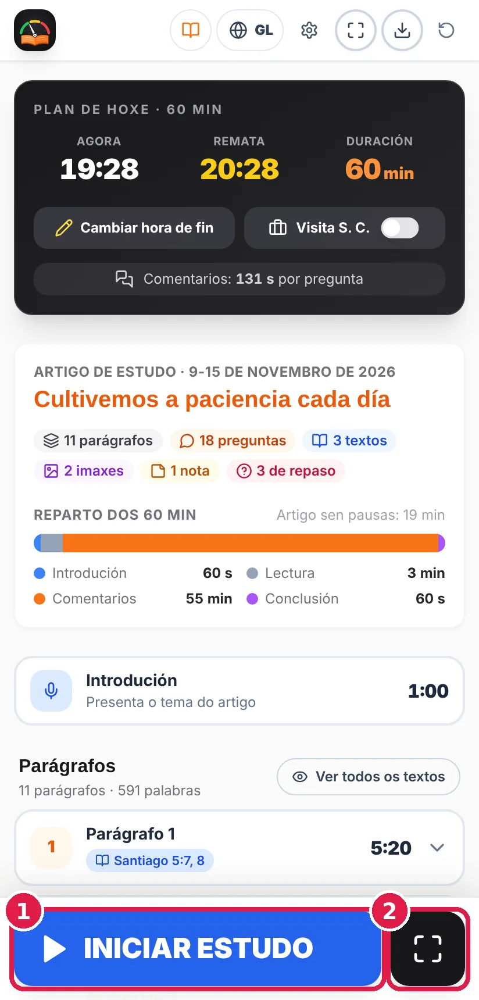
Antes de comezar.
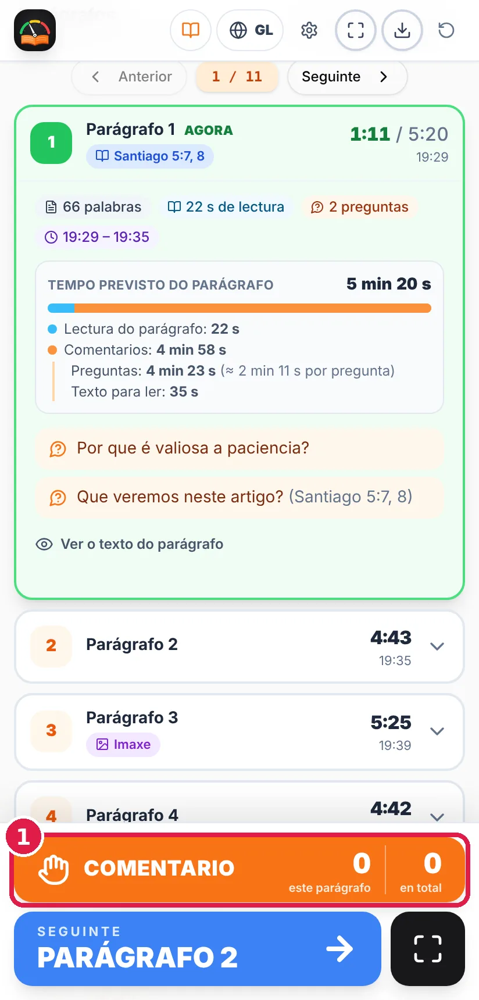
Durante un parágrafo.
Botón azul grande: dische que vén despois. Prémeo cada vez que pases a outra parte: Iniciar estudo → Parágrafo 1 → Parágrafo 2 → … → Repaso → Conclusión → Rematar estudo.
Botón negro⛶: abre o modo presentación.
Durante os parágrafos aparece tamén o botón laranxa ✋ COMENTARIO: prémeo cada vez que alguén comenta. Ao final verás cantos comentarios houbo.
Introdución. Preme “Iniciar estudo”. Comezan o cronómetro xeral e o da introdución.
Parágrafos. Preme Seguinte ao comezar cada parágrafo. Verás o tempo que leva sobre o previsto (por exemplo, 1:11 / 5:43) e a cor (apartado 8).
Preguntas de repaso. Despois do último parágrafo veñen as preguntas do recadro final.
Conclusión. Dura xusto o que queda ata a hora de fin: se sobra tempo, aprovéitao todo, aínda que sexa máis que o minuto de Axustes, e se queda menos, acúrtase. Se se pasa a hora de fin, ponse en vermello.
Rematar estudo. Detense o cronómetro e gárdase o informe do estudo (apartado 15).
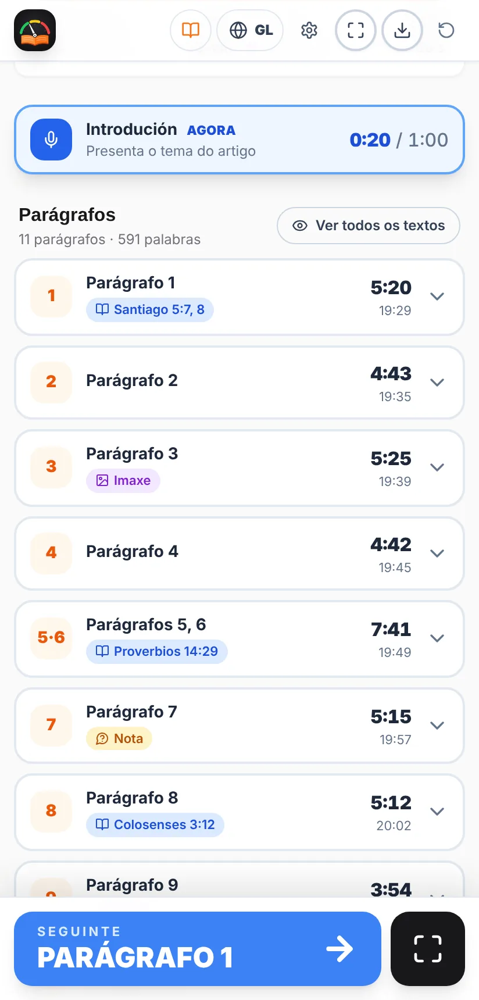
Introdución en curso.
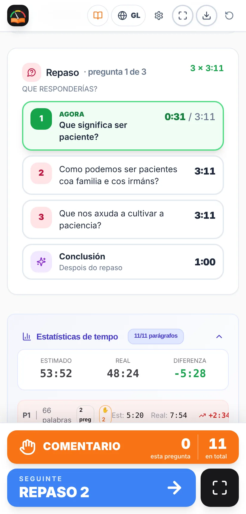
Preguntas de repaso.
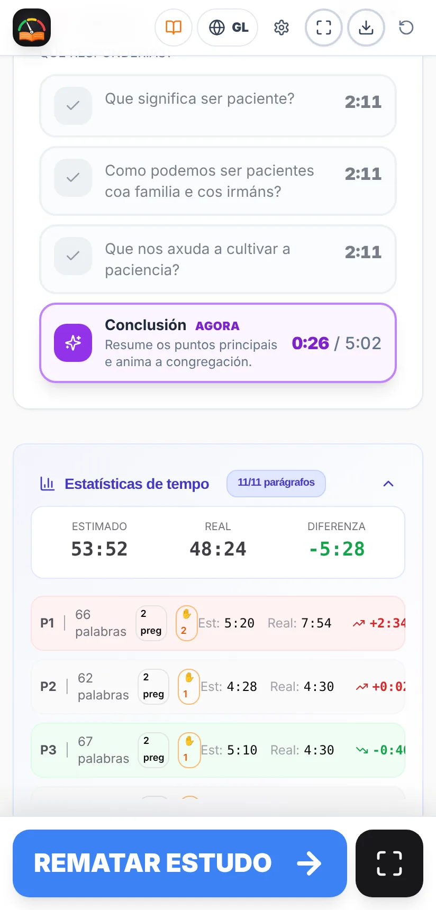
Conclusión.
Co botón ⏸ do plan podes pausar o cronómetro se hai unha interrupción. En pausa detense o reloxo da parte en curso, pero a hora de fin non se move: o tempo restante segue baixando, porque a reunión remata á súa hora.
8As cores: verde, amarelo e vermello
A tarxeta do que está en curso (parágrafo, introdución, pregunta de repaso ou conclusión) cambia de cor segundo o tempo que leva:
Cor
Cando
Que facer
EN TEMPO
Ata o tempo previsto.
Todo ben: segue así.
PRÓRROGA
Pasou do seu tempo, pero non máis dun 30 %.
Vai pechando os comentarios.
EXCEDIDO
Máis dun 30 % por riba do previsto.
Pasa ao seguinte parágrafo.
En tempo.
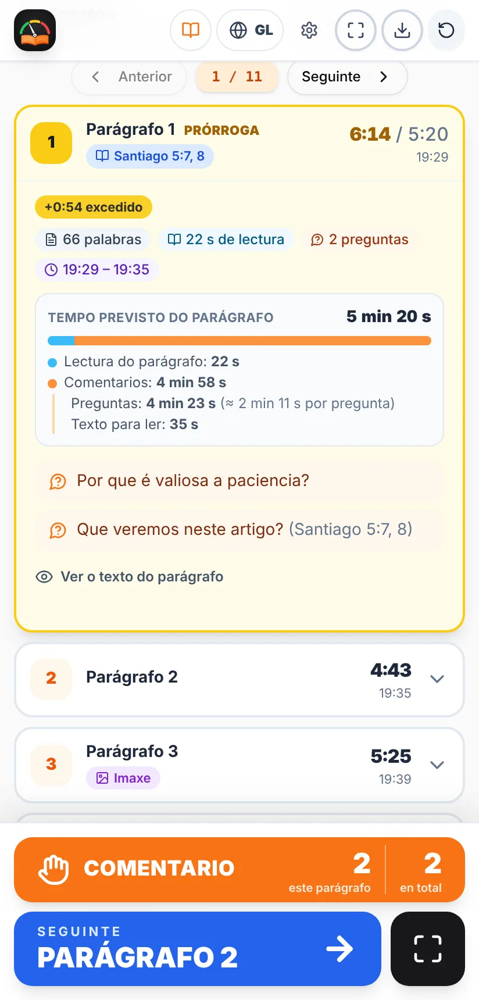
Prórroga, co tempo que se excedeu.
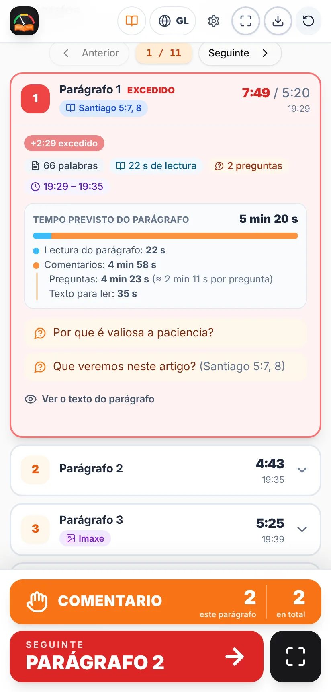
Excedido.
Nos últimos 5 minutos do estudo os parágrafos e as preguntas de repaso non teñen prórroga: pasan directamente de verde a vermello, para non comer o tempo do final. A conclusión conserva sempre a súa prórroga.
Se un tramo se alonga, non pasa nada: ao premer Seguinte, a aplicación volve repartir o tempo que queda entre o que falta, para rematar á hora.
O botón «Seguinte» tamén te avisa
Cando o tramo en curso pasa a vermello, o botón grande para avanzar tamén cambia, para que o vexas sen buscalo:
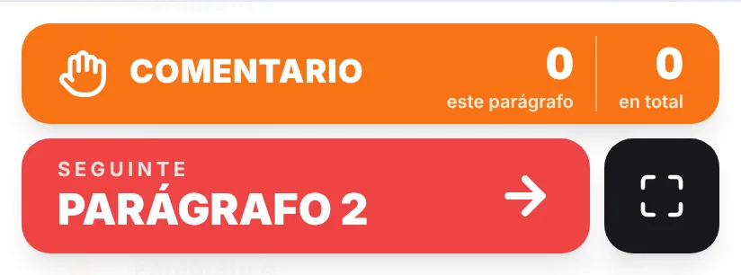
En vermello: aínda se pode recuperar.
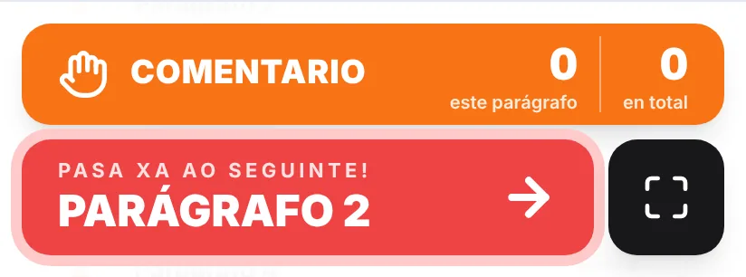
Escintilando: pasa xa ao seguinte.
Botón vermello: o tramo pasou de tempo, pero aínda se pode recuperar no que falta. Vai pechando os comentarios.
Botón vermello que escintila con «Pasa xa ao seguinte!»: xa non queda de onde sacar tempo (quedarían menos de 30 segundos por cada pregunta que falta, ou estás nos últimos 5 minutos). Pasa ao seguinte en canto poidas.
No modo presentación o botón vólvese branco con letras vermellas, para que se vexa ben sobre calquera cor de fondo.
Se non o queres, apágao en Axustes → Avisos → «Botón «Seguinte» en vermello».
9O modo presentación
É a forma recomendada de dirixir o estudo. Mostra só o necesario, con letras e botóns grandes, e a cor dite dunha ollada como vas de tempo.
Ábrese co botón ⛶ de abaixo e péchase coa ✕ de arriba (ou co botón “atrás” do móbil, sen saír da app).
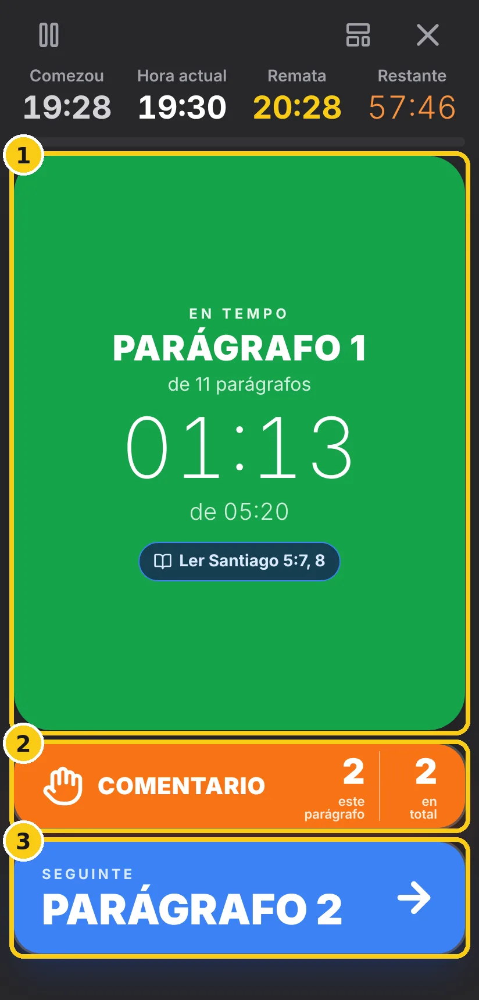
O modo presentación durante un parágrafo.
Recadro de cor: onde estás (por exemplo, Parágrafo 1), o cronómetro desa parte e o seu tempo previsto. Verde, amarelo ou vermello segundo vas.
Comentario: prémeo cada vez que alguén comenta. Á esquerda ves os comentarios deste parágrafo (ou desta pregunta) e á dereita os do total.
Seguinte: pasa á parte seguinte. O botón di que vén despois.
Arriba ves a que hora comezou o estudo, a hora actual, a hora á que remata e o tempo que queda.
Hai tres deseños. Cámbianse co botón ▦ de arriba ou en Axustes → Pantalla:
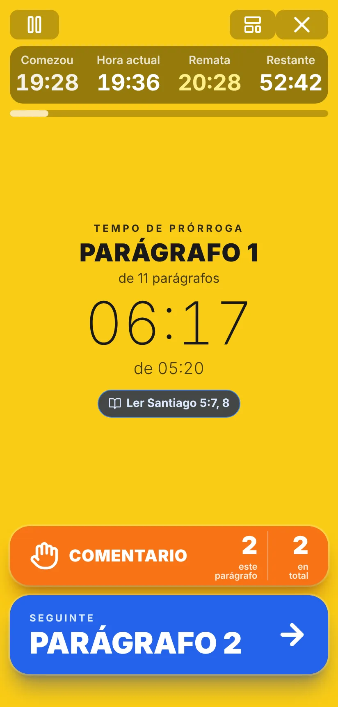
Semáforo: toda a pantalla cambia de cor.
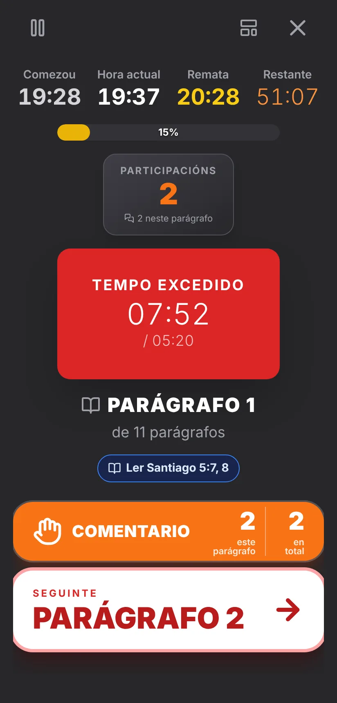
Clásico: co contador de comentarios.
Ao final, o botón grande di “Rematar estudo” e, despois, “Ver informe”.
10Como se calculan os tempos
Lectura de cada parágrafo = as súas palabras ÷ a velocidade de lectura (150, 180 ou 210 palabras por minuto). Cada texto bíblico, imaxe, nota ou idea importante suma ademais o tempo por resposta (mínimo 30 segundos; por defecto 35) como comentario, porque é o auditorio quen o le ou o comenta.
Introdución e conclusión teñen reservado o tempo de Axustes (1 minuto cada unha por defecto). A conclusión axústase á hora de fin: se ao rematar o repaso sobra tempo, queda con todo; se falta, acúrtase.
Comentarios: o resto do tempo repártese entre todas as preguntas. Os parágrafos longos ou agrupados reciben un pouco máis (o “extra” verde do apartado 6).
Durante o estudo: cada vez que premes Seguinte, recalcúlase o que queda para rematar á hora.
Exemplo: nun estudo de 60 minutos con 11 parágrafos e 21 preguntas, uns 7 minutos son de lectura, 2 de introdución e conclusión, e uns 51 de comentarios: algo máis de 2 minutos por pregunta.
11Axustes
Toca ⚙ arriba á dereita. Os axustes gárdanse no teu dispositivo e están organizados en catro lapelas:
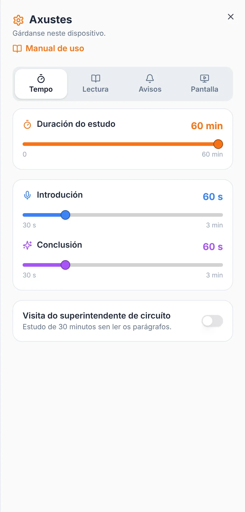
Tempo
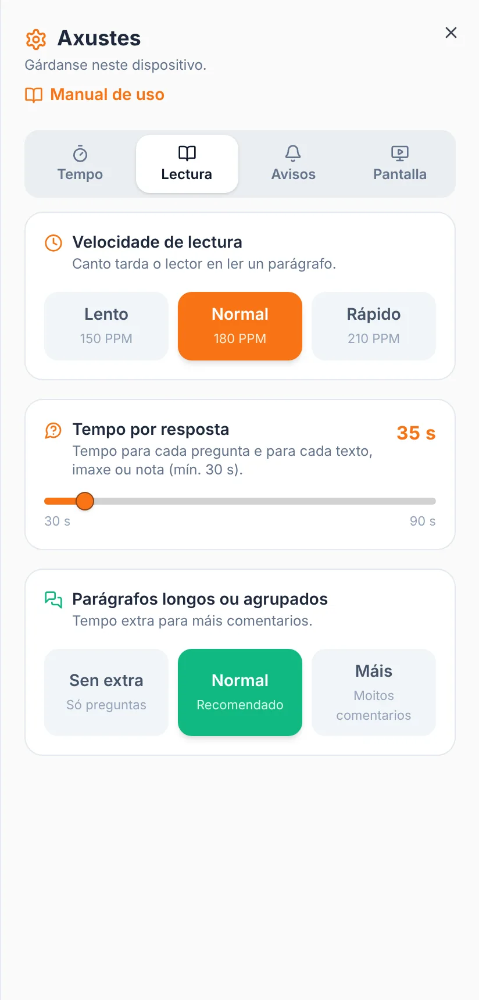
Lectura
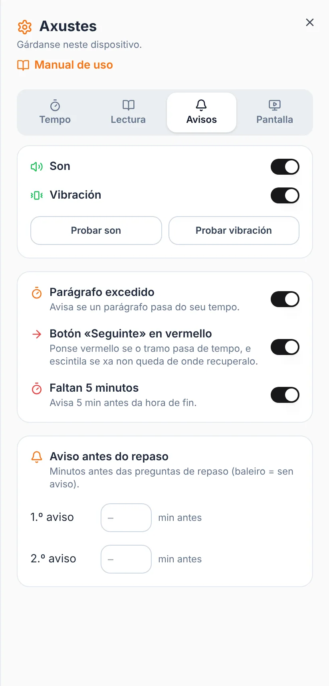
Avisos
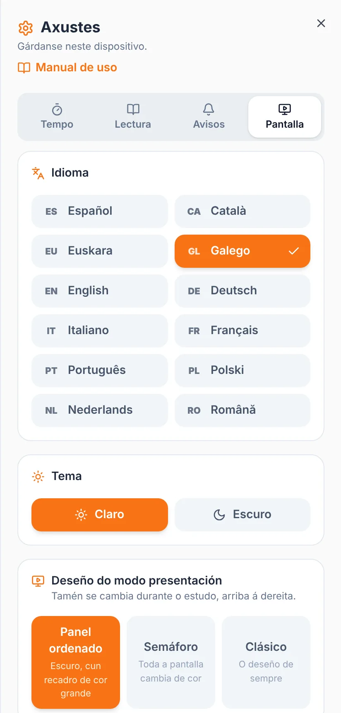
Pantalla
Lapela
Que podes cambiar
Tempo
Duración do estudo (ata 60 min). Duración da introdución e da conclusión (de 30 s a 3 min). Visita do superintendente de circuíto.
Lectura
Velocidade de lectura do lector: Lento (150), Normal (180) ou Rápido (210 palabras/min). Tempo por resposta (de 30 a 90 s; tamén se usa para cada texto, imaxe, nota ou idea importante). Parágrafos longos ou agrupados: Sen extra, Normal ou Máis comentarios.
Avisos
Son e vibración (con botóns para probalos). Aviso de parágrafo excedido, aviso de “faltan 5 minutos” e ata dous avisos antes do repaso.
Pantalla
Idioma, tema claro ou escuro (con catro variantes de escuro) e o deseño do modo presentación.
Se cambias a velocidade de lectura ou o tempo por resposta co estudo en marcha, aplicarase no próximo estudo.
12Avisos de son e vibración
Parágrafo excedido: soa cando o parágrafo en curso pasa do seu tempo.
Faltan 5 minutos: 5 minutos antes da hora de fin, con son, vibración e unha mensaxe en pantalla.
Antes do repaso: escribe cantos minutos antes das preguntas de repaso queres un aviso (por exemplo, 10 e 5). Déixao baleiro se non o queres.
Pouco tempo para o repaso: se quedan menos de 20 segundos por pregunta de repaso, a aplicación advírteche.
Botón «Seguinte» en vermello: o botón para avanzar ponse vermello cando o tramo pasa de tempo e escintila cando xa non queda de onde recuperalo (apartado 8).
Comproba que o móbil non está en silencio se queres oír os avisos. A vibración funciona en Android; en iPhone depende do navegador.
13Visita do superintendente de circuíto
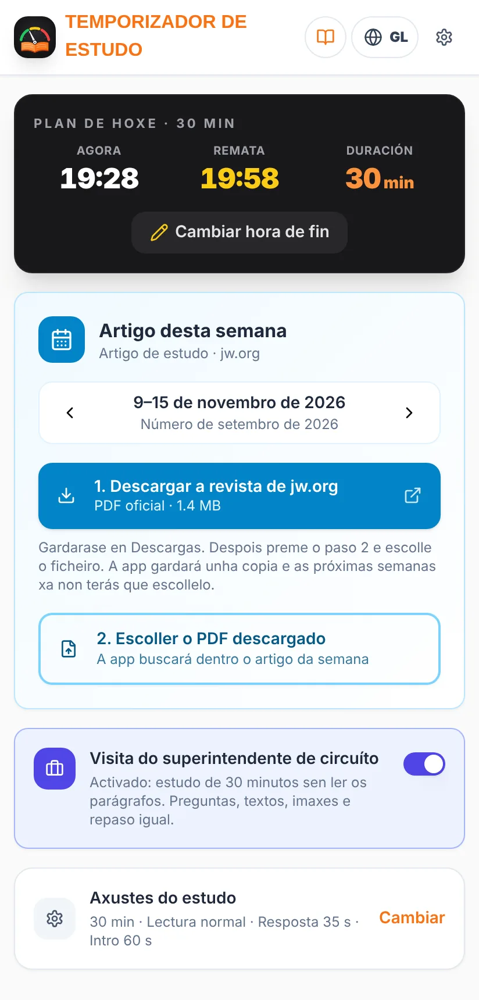
Interruptor activado: estudo de 30 minutos.
A semana da visita, activa o interruptor “Visita do superintendente de circuíto” na pantalla de inicio (ou en Axustes → Tempo). O estudo pasa a durar 30 minutos e non se len os parágrafos: mantéñense as preguntas, os textos bíblicos, as imaxes e o repaso. Lembra desactivalo despois da visita.
Esa semana non hai lectura do parágrafo. No tempo previsto de cada parágrafo, os textos para ler, as imaxes e as notas aparecen dentro dos comentarios, por exemplo «Texto para ler» ou «Imaxe para comentar» (en plural se hai máis dun).
14Idiomas
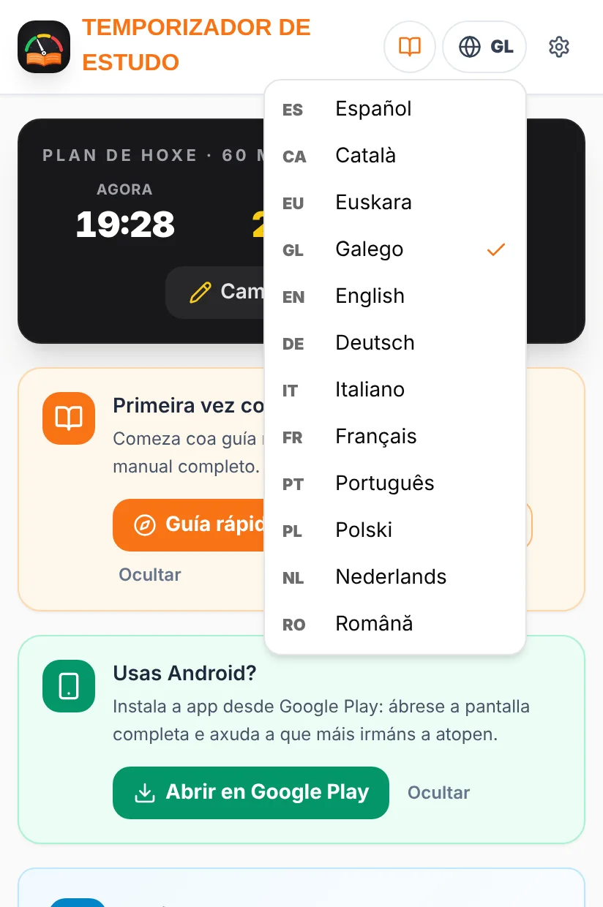
Menú de idioma.
A aplicación funciona en castelán, catalán, éuscaro, galego, inglés, alemán, italiano, francés, portugués, polaco, neerlandés e romanés. Cámbiao co botón do globo, arriba, ou en Axustes → Pantalla. Ao cambiar o idioma:
Toda a aplicación aparece nese idioma, coas súas datas e horas.
O botón de jw.org descarga A Atalaia nese mesmo idioma. O idioma da aplicación decide o idioma da revista.
En portugués, a aplicación pregunta unha vez se prefires a edición de Portugal ou a do Brasil. Podes cambialo despois en Axustes → Pantalla.
Este manual tamén está dispoñible en todos eses idiomas: usa os botóns de idioma da parte de arriba.
15Ao rematar: o informe e o historial
Ao premer “Rematar estudo”, a aplicación garda un informe cos tempos de cada parte. Sérveche para ver que se alongou e mellorar a próxima vez.
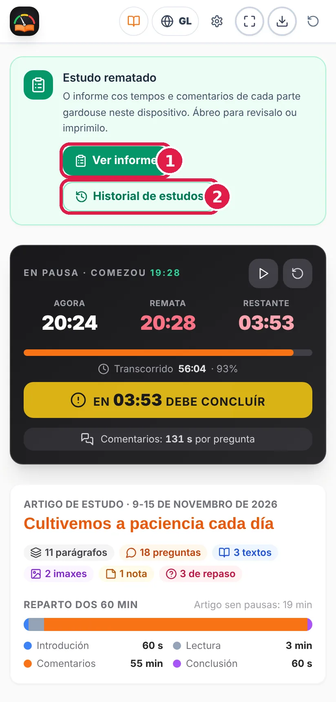
Arriba aparece a tarxeta “Estudo rematado”.
Ver informe: abre o informe deste estudo nunha lapela á parte.
Historial de estudos: abre a lista de todos os estudos gardados.
O informe
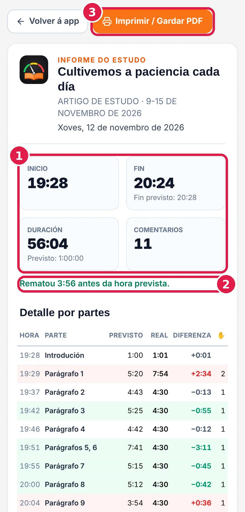
Parte de arriba do informe.
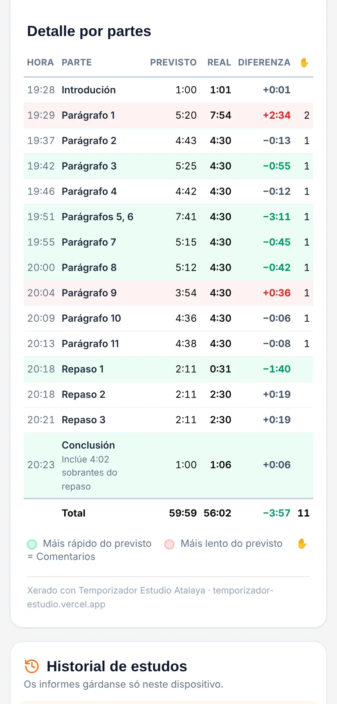
A táboa con cada parte.
Inicio, fin e duración do estudo, coa hora de fin prevista e o total de comentarios.
Resumo nunha frase, por exemplo “Rematou 3:57 antes da hora prevista” (en verde) ou “despois” (en vermello).
Imprimir / Gardar PDF: para imprimilo en papel ou gardalo como ficheiro.
A táboa ten unha fila por cada parte: introdución, cada parágrafo, cada pregunta de repaso e conclusión. En cada fila verás:
Hora á que comezou esa parte.
Previsto e Real: o tempo do plan e o que de verdade se usou.
Diferenza: en verde se foi máis rápido e en vermello se se alongou.
✋: os comentarios marcados.
No ordenador e ao imprimir aparecen tamén as palabras e as preguntas de cada parágrafo. O informe impreso cabe nunha folla.
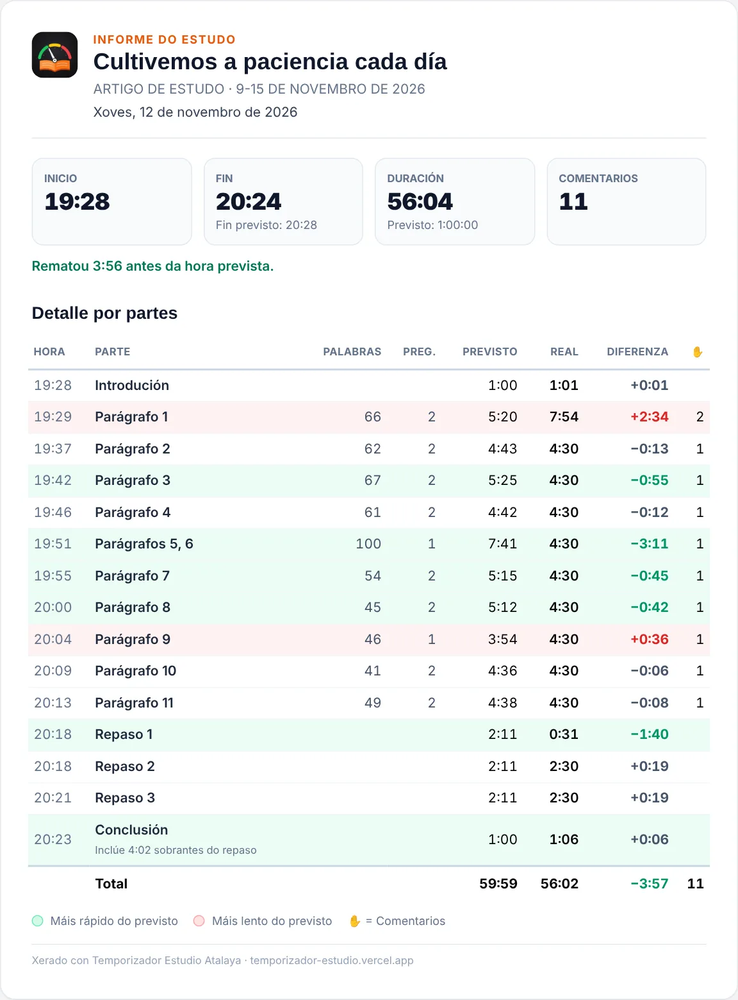
O informe completo, como se ve no ordenador ou impreso.
O historial de estudos
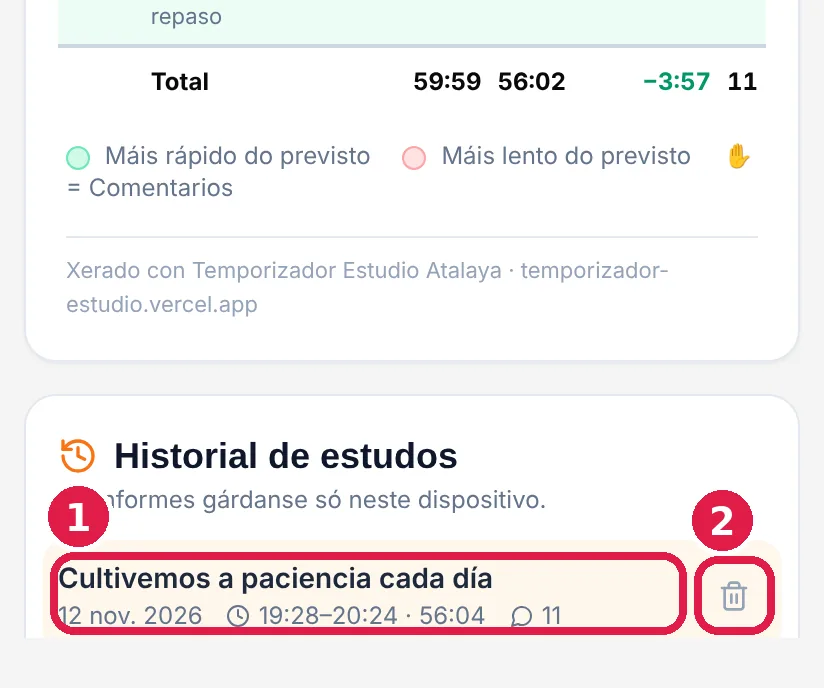
Lista de estudos gardados, debaixo do informe.
Toca un estudo para ver o seu informe. Móstranse a data, as horas, a duración e os comentarios.
Papeleira: para borrar un informe. Preme unha vez e despois confirma con “Eliminar?”.
Os informes gárdanse só neste dispositivo, nunca en internet. Gárdanse ata 100 estudos. Se borras os datos do navegador ou da app, o historial pérdese.
Tamén podes abrir o historial desde a ligazón “Historial de estudos” ao final da pantalla de inicio.
Outras opcións
Debaixo do plan aparecen tamén as estatísticas de tempo de cada parágrafo.
Co botón exportar⬇ de arriba podes gardar o plan do estudo como imaxe ou PDF.
Para preparar outro estudo, preme comezar de novo↻.
16Preguntas frecuentes
Podo dirixir lendo os parágrafos e as preguntas na aplicación?
Non. A aplicación móstraos só para calcular os tempos. Para dirixir, usa sempre JW Library ou a revista A Atalaia impresa.
Por que se descargou A Atalaia noutro idioma?
A revista descárgase no idioma da aplicación. Cambia o idioma co botón do globo e volve premer “Descargar a revista de jw.org”.
Di que non recoñece o formato do artigo.
Usa o PDF oficial de A Atalaia, edición de estudo, descargado de jw.org (o botón “Descargar a revista de jw.org” faino por ti). Os PDF escaneados ou feitos con capturas non se poden ler.
Non atopa o artigo da semana dentro da revista.
Comproba que a semana escollida corresponde a ese número da revista. Se non, a aplicación mostra o artigo máis próximo e déixache escoller outra semana.
Necesito internet durante o estudo?
Só para descargar a revista. Unha vez cargado o artigo, o temporizador funciona sen conexión.
Cheguei tarde ou comecei con atraso, que fago?
Abre o parágrafo polo que ides e preme “Comezar desde aquí”. A aplicación repartirá o tempo que queda.
O discurso público rematou tarde.
Antes de comezar, toca «Cambiar hora de fin» e escribe a hora á que debe rematar o estudo para que a reunión acabe a tempo. A aplicación acurta todo para rematar a esa hora. Esta opción só acurta o estudo: nunca o alonga.
Non soan os avisos.
Revisa en Axustes → Avisos que estean activados, preme “Probar son” e comproba que o móbil non estea en silencio.
Que datos garda a aplicación?
Só os teus axustes e as revistas que escolles gardar, e sempre no teu dispositivo. Non hai contas nin se envían datos a ningún servidor. Máis información na política de privacidade.
Onde vexo os estudos doutras semanas?
No historial de estudos: preme “Historial de estudos” ao rematar un estudo ou na ligazón do final da pantalla de inicio.
Podo borrar un informe?
Si. No historial, preme a papeleira do estudo e despois confirma con “Eliminar?”.
Por que a conclusión durou máis do previsto?
Se ao rematar o repaso sobra tempo, a conclusión queda con ese tempo para rematar á hora. O informe indícao debaixo de “Conclusión”.